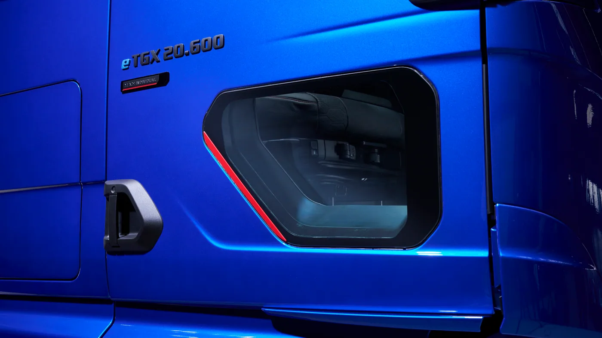

MAN presentó el 14 de septiembre de 2026, en la jornada de prensa de IAA Transportation, una nueva generación del eTGX. El anuncio reúne cambios de aerodinámica, recuperación de energía y batería, junto con una nueva variante de tractor.
Según el fabricante, la batería ofrece hasta un 10% más de energía utilizable. La autonomía declarada llega a 660 kilómetros para el tractor 4x2 y a 720 kilómetros para el 6x2 con una séptima batería. MAN también comunica hasta 25 toneladas de carga útil con semirremolque estándar para la configuración 4x2.
Son cifras de versiones específicas, no atributos intercambiables de cualquier eTGX. La nota de presentación no confirma disponibilidad argentina ni garantiza esos resultados en todos los recorridos. El anuncio de producto es distinto del informe Beyond Diesel ya tratado en este blog.
La versión importa tanto como el nombre
Análisis de Zabala Repuestos. En una gama con varias configuraciones, el nombre comercial deja de ser suficiente para comparar. Conviene que cada propuesta identifique el vehículo completo y mantenga sus datos asociados. Así se evita formar una unidad imaginaria sumando las mejores cifras de versiones diferentes.
Una ficha de comparación puede reunir configuración, equipo instalado y tarea prevista en una misma hoja. El operador debería poder reconocer de dónde sale cada dato y qué condiciones lo acompañan. Si una característica cambia, la revisión debe alcanzar al conjunto de la propuesta.
Más autonomía: una oportunidad para revisar el circuito
Una ampliación del alcance puede abrir preguntas sobre servicios antes descartados. Para estudiarlos, la empresa necesita describir distancias, paradas y variaciones habituales. Ese relevamiento permite pedir una evaluación concreta en lugar de suponer que cualquier viaje más corto que la cifra anunciada quedará cubierto.
También conviene conocer los casos que exigen flexibilidad: un desvío, una entrega adicional o una espera no prevista. El plan debería explicar qué opciones conserva la operación cuando cambia el día. Tener esa respuesta forma parte de la evaluación, aunque el recorrido habitual parezca sencillo.

La configuración debe conversar con la carga
Antes de elegir una variante, interesa saber qué mercadería se transportará y cómo se organiza su despacho. No todas las operaciones aprovechan del mismo modo una capacidad nominal. La descripción del servicio debe incluir el equipo remolcado y las condiciones reales de trabajo.
Para una flota, también puede ser útil observar qué viajes se completan con la configuración actual y qué limita su productividad. La respuesta permite orientar la consulta: ampliar alcance, modificar el equipo o mejorar coordinación son necesidades distintas y no deberían confundirse.
El taller necesita prepararse para la unidad que llegará
La planificación de atención debería empezar con la documentación de la versión ofrecida. Conviene conocer qué tareas realizará la red, qué recursos necesita el operador y cómo se tramita una asistencia. La preparación debe seguir los procedimientos oficiales del vehículo, especialmente en sistemas de alta tensión.
El historial de cada unidad también merece una organización clara. Registrar configuración e intervenciones facilita las consultas posteriores. En una flota que incorpora novedades por etapas, esa información ayuda a evitar que una instrucción válida para un camión se aplique por costumbre a otro diferente.
Qué debería dejar una demostración
- Una descripción del recorrido y de la tarea realizada.
- Observaciones del conductor después de recibir la formación correspondiente.
- Un registro de detenciones y de los motivos de cada una.
- Las condiciones necesarias para repetir el servicio.
- Preguntas pendientes con un responsable de respuesta.
Ese material permite evaluar una propuesta con más claridad que una impresión inicial. También ayuda a que las personas que no participaron de la prueba entiendan sus resultados y sus límites. La decisión de flota necesita poder explicarse después, cuando llega el momento de ampliar o revisar la incorporación.
Una lectura para Argentina
La nueva generación muestra cómo evoluciona la oferta internacional, pero una decisión local requiere confirmar producto, infraestructura y respaldo en el país. La autonomía anunciada es un punto de partida para preguntar, no una sustitución de la evaluación de aplicación.
El avance más interesante será comprobar qué trabajos pueden sostenerse de forma repetible con cada variante. Para un transportista, la tecnología cobra sentido cuando puede vincularse con un servicio concreto, una rutina comprensible y una respuesta técnica disponible.